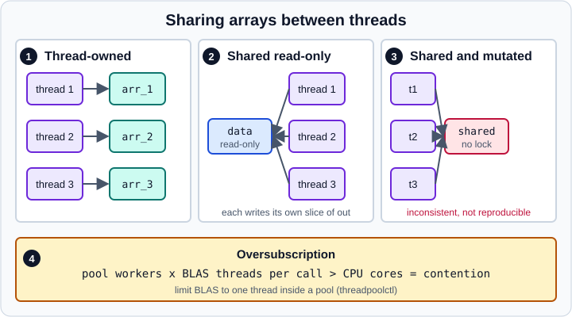

Threads, Free-Threading and Performance
|
This content was generated with the assistance of AI and should be verified against the official documentation before being relied on in production. |
This page was written in October 2026 for NumPy 2.5 (2.5.4 was the current release). Examples target Python 3.13 or 3.14 and were run on Python 3.13. Every Python example was run with NumPy 2.5.4. Free-threaded builds of Python were not used to run the examples, so statements about them come from the official documentation and are labelled as such.
NumPy is fast because the heavy loops are compiled, not because it is parallel. Vectorised code uses one core unless the operation happens to call a multi-threaded BLAS or LAPACK library, or you split the work yourself. This page explains what NumPy promises when several threads or processes touch arrays, how to share data safely, how to avoid the common slowdown where two layers of parallelism fight for the same cores, and where the official documentation says NumPy’s guarantees end. For the fundamentals of vectorisation, see Universal Functions and Broadcasting. For the Python-level concurrency model (threads, processes and asyncio) see Concurrency and Async in Python.
What NumPy promises about threads
NumPy supports multithreaded programs through Python’s standard threading module, but the thread safety page of the official manual is deliberately modest: ndarray has no built-in locking. The manual says that locking may be added in the future, and that for now you should either share arrays read-only between threads or add your own locking.
In practice this gives three rules.
-
Thread-owned data is always safe. If each worker creates and uses its own arrays and nothing is shared, there is nothing to race on. This is also where the easiest speed-ups come from.
-
Read-only sharing is safe. Any number of threads can read the same array as long as no thread modifies it, resizes it or changes its shape.
-
Mutation of shared arrays needs your own synchronisation. Simultaneous reads and writes give, in the words of the manual, results that are at best inconsistent and not reproducible. Resizing an array while another thread is reading it (for example inside a ufunc call) can crash the interpreter.

Panels 1 to 3 of the figure are the three sharing patterns above. Marker 4 is the oversubscription problem described later on this page.
Source: NumPy manual: Thread Safety
Which operations run in parallel
Many NumPy operations release the Global Interpreter Lock (GIL) while they run their compiled inner loops, so several Python threads can execute them at the same time on different cores. Two practical consequences follow.
-
A thread pool speeds up work that is dominated by large, NumPy-level calls (sorting, element-wise maths, reductions, FFTs,
@). -
A thread pool does not speed up work that spends its time in the interpreter, such as Python loops over array elements, or in operations that keep the GIL. The thread safety page names one important case: arrays with
dtype=np.object_do not release the GIL, so threads give no speed-up on them, and the manual suggestsmultiprocessinginstead.
The following example sorts and sums eight large arrays, first in a loop and then in a thread pool. It is the pattern the documentation recommends: every task reads its own input and returns a scalar, so no array is written by two threads.
import time
from concurrent.futures import ThreadPoolExecutor
import numpy as np
rng = np.random.default_rng(0)
chunks = [rng.standard_normal(4_000_000) for _ in range(8)]
def heavy(x):
return float(np.sort(np.exp(x)).sum())
t = time.perf_counter()
serial = [heavy(c) for c in chunks]
t_serial = time.perf_counter() - t
t = time.perf_counter()
with ThreadPoolExecutor(max_workers=4) as pool:
threaded = list(pool.map(heavy, chunks))
t_threads = time.perf_counter() - t
print(np.allclose(serial, threaded))
print(f"serial {t_serial:.2f}s, 4 threads {t_threads:.2f}s")On the machine used for this page (an Apple silicon laptop, NumPy 2.5.4 on Python 3.13) the output was:
True
serial 1.01s, 4 threads 0.29sThe absolute timings depend on the hardware, the array sizes and the BLAS or SIMD paths NumPy picks, so measure on your own data. The point is that the speed-up exists even with the GIL enabled, because the compiled loops release it.
Safe sharing patterns
Thread-owned arrays and independent random streams
When each worker needs random numbers, give each one its own Generator built from a spawned SeedSequence. Never share a single Generator between threads, and never build streams with seed + worker_id, because nearby integer seeds are not guaranteed to give statistically independent streams. The details of seeding live in Seeding, Reproducibility and Parallel Streams.
from concurrent.futures import ThreadPoolExecutor
import numpy as np
def work(child_seed):
rng = np.random.default_rng(child_seed)
x = rng.standard_normal(1_000_000)
return float(x.mean())
children = np.random.SeedSequence(2026).spawn(4)
with ThreadPoolExecutor(max_workers=4) as pool:
print([round(m, 5) for m in pool.map(work, children)])Output:
[-0.00241, 0.00064, 0.00055, -0.00071]Because the seed sequence is fixed, the four means are the same on every run, whatever order the threads finish in.
A read-only input and disjoint output slices
When all threads must work on one big array, make the input read-only and let each thread write only to its own slice of a pre-allocated output. Because the slices never overlap, no two threads write the same memory. Marking the input with flags.writeable = False turns an accidental write into an immediate ValueError instead of a silent race.
from concurrent.futures import ThreadPoolExecutor
import numpy as np
data = np.linspace(0, 1, 1_000_000)
data.flags.writeable = False
out = np.empty_like(data)
def block(sl):
np.sqrt(data[sl], out=out[sl])
slices = [slice(i, i + 250_000) for i in range(0, 1_000_000, 250_000)]
with ThreadPoolExecutor(4) as pool:
list(pool.map(block, slices))
print(np.allclose(out, np.sqrt(data)))
try:
data[0] = 1
except ValueError as e:
print("ValueError:", e)Output:
True
ValueError: assignment destination is read-onlyLocks around shared mutation
If several threads really must update the same array, serialise the updates with a lock. A lock makes the updates correct but also makes them sequential, so keep the critical section tiny and prefer per-thread partial results that you combine at the end.
import threading
from concurrent.futures import ThreadPoolExecutor
import numpy as np
counts = np.zeros(4, dtype=np.int64)
lock = threading.Lock()
def bump(i):
with lock:
counts[i % 4] += 1
with ThreadPoolExecutor(4) as pool:
list(pool.map(bump, range(1000)))
print(counts)Output:
[250 250 250 250]The increment counts[i % 4] += 1 is a read-modify-write on the array, which is exactly the kind of operation that loses updates when two threads interleave. Without the lock the result is not guaranteed.
Source: NumPy manual: Thread Safety
Context-local state: errstate and print options
Some global-looking NumPy settings are in fact context-local, which makes them safe to use from threads and from asyncio tasks. According to the thread safety page, numpy.errstate (floating-point error handling) and the text formatting options set with numpy.set_printoptions or numpy.printoptions keep their state per thread and per asyncio task, and a context manager restores the previous value when it exits. The 2.1 release notes record the print options change: their state now lives in a ContextVar.
from concurrent.futures import ThreadPoolExecutor
import numpy as np
def f(ignore):
with np.errstate(divide="ignore" if ignore else "raise"):
try:
np.float64(1) / np.float64(0)
return "ignored"
except FloatingPointError:
return "raised"
with ThreadPoolExecutor(2) as pool:
print(list(pool.map(f, [True, False])))Output:
['ignored', 'raised']Each thread sees only its own errstate. See Floating-Point Errors and errstate for the settings themselves.
Source: NumPy manual: Thread Safety
Free-threaded Python
CPython 3.13 introduced an optional build without the GIL (PEP 703), usually called free-threaded Python. In that build nothing serialises access to Python objects, so threads can run Python code in parallel but also expose races that the GIL used to hide.
What the NumPy documentation states, as checked in October 2026:
-
Support is experimental and started with NumPy 2.1 on CPython 3.13. The "Writing performant code" page describes free-threaded Python as supported in Python 3.14 and experimental in 3.13. The 2.5 release notes list "improved free-threading support" among the highlights, and add stable-ABI support for free-threaded Python in the C API.
-
The rule of the previous sections still applies: share arrays read-only or own them per thread, because
ndarrayhas no locking. -
dtype=np.object_arrays deserve extra care. They hold references to Python objects, and without the GIL a data race on those objects can occur that cannot happen in a normal build. -
You can check which mode you are in with
python -VV(a free-threaded build says so in its version string) orsys._is_gil_enabled(), which returnsFalsewhen the GIL is disabled. A free-threaded interpreter can still re-enable the GIL if an imported extension module does not declare compatibility, so check the function at run time, not only the build.
import sys
print(sys.version)
print("GIL enabled:", sys._is_gil_enabled())On the standard build used for this page the second line printed GIL enabled: True.
A free-threaded interpreter needs a build of NumPy that was compiled for it (published as a separate wheel tag, cp313t or cp314t). Whether a given package of your stack has such a wheel is something to check before you rely on it. The community tracker at https://py-free-threading.github.io is the place the NumPy manual points to for status and migration advice.
BLAS threads and oversubscription
Matrix multiplication (@, np.dot, matmul), linalg.solve, svd and similar routines call a BLAS or LAPACK library (OpenBLAS in most Linux and Windows wheels, Accelerate in some macOS builds). Those libraries often run their own thread pool. If you then call such a function from every worker of your own thread pool, the total number of busy threads is workers x BLAS threads and can far exceed the number of cores. The result is contention and, frequently, code that is slower than the single-threaded version. This is the "oversubscription" of marker 4 in the figure above.
The manual recommends limiting the BLAS threads (usually to one) while your own pool is running, and names threadpoolctl as the tool. It can list the native thread pools loaded in your process and cap them for a block of code.
import numpy as np
from threadpoolctl import threadpool_info, threadpool_limits
a = np.random.default_rng(0).standard_normal((500, 500))
for lib in threadpool_info():
print(lib["user_api"], lib["internal_api"], lib["num_threads"])
with threadpool_limits(limits=1, user_api="blas"):
b = a @ a # runs with a single BLAS thread inside this block
print(b.shape)threadpool_info() can return an empty list on builds whose BLAS it does not recognise, such as some macOS wheels that use Accelerate, and then the limit is a no-op. On the machine used for this page the list was empty, b.shape printed (500, 500), and the example still ran correctly. On a Linux machine with OpenBLAS you will see an openblas entry and the with block lowers its num_threads to 1.
Two other ways to control native threads exist and are worth knowing. Environment variables such as OPENBLAS_NUM_THREADS, MKL_NUM_THREADS and OMP_NUM_THREADS set before the process starts (or before NumPy is imported) fix the pool size for the whole program. threadpoolctl changes it at run time and restores it afterwards. The scikit-learn library uses threadpoolctl and joblib for the same purpose, which is why many of its estimators accept n_jobs.
The NumPy 2.3 release notes add an OpenMP build option (-Denable_openmp=true with Meson, off by default) that lets np.sort and np.argsort run in parallel, with reported speed-ups up to 3.5x on x86 with AVX2 or AVX-512, controlled by OMP_NUM_THREADS. The standard wheels are not built that way, so you only meet it in custom builds.
Processes instead of threads
When the work does not release the GIL (object arrays, Python loops around NumPy calls) or the library you call is not thread-safe, use processes. Each process has its own memory, so there is no accidental sharing, at the price of higher memory use and the cost of pickling arguments and results.
The performant-code page gives these recommendations, which this page repeats:
-
Reuse worker processes through a pool (
concurrent.futures.ProcessPoolExecutor) instead of creating processes per task. -
Do not request the
forkstart method unless you know it is safe. Forking a multithreaded process (for example one that has already started a BLAS thread pool) can deadlock or crash. Python 3.14 changed the default start method on POSIX platforms other than macOS fromforktoforkserver; macOS has usedspawnby default since Python 3.8. -
Send as little data as possible between processes. For large arrays use shared memory (
multiprocessing.shared_memory) so workers read and write in place. -
Define worker functions at module top level, because lambdas and nested functions cannot be pickled. For objects the standard
picklecannot handle,joblib(whoselokybackend usescloudpickle) is the usual answer.
The example below squares a large array in four worker processes without copying it to them: the parent allocates a shared memory block, wraps it in an ndarray, and each worker attaches to the block by name and modifies its own slice.
from concurrent.futures import ProcessPoolExecutor
from multiprocessing import shared_memory
import numpy as np
def square_block(args):
name, shape, dtype, start, stop = args
shm = shared_memory.SharedMemory(name=name)
arr = np.ndarray(shape, dtype=dtype, buffer=shm.buf)
arr[start:stop] **= 2
shm.close()
if __name__ == "__main__":
src = np.arange(1_000_000, dtype=np.float64)
shm = shared_memory.SharedMemory(create=True, size=src.nbytes)
try:
arr = np.ndarray(src.shape, dtype=src.dtype, buffer=shm.buf)
arr[:] = src
step = 250_000
jobs = [(shm.name, src.shape, src.dtype, i, i + step)
for i in range(0, src.size, step)]
with ProcessPoolExecutor(max_workers=4) as pool:
list(pool.map(square_block, jobs))
print(np.allclose(arr, src**2))
del arr # release the buffer before closing the block
finally:
shm.close()
shm.unlink()Output:
TrueThe if __name__ == "__main__" guard is required because the spawn and forkserver start methods import the module in each worker. Releasing arr before shm.close() avoids a BufferError about exported pointers. The shared block is not freed automatically, so unlink() must be called exactly once.
Choosing the number of workers and balancing the load
-
os.cpu_count()andos.process_cpu_count()report the machine or process view and may not reflect a container or HPC allocation. The manual points tojoblib.cpu_count(), which respects CPU affinity and Linux CFS quotas. -
Prefer dynamic scheduling (a pool that hands out chunks as workers become free) to splitting the data into exactly one block per worker, because blocks often take unequal time. Tune the chunk size so that tasks are neither so small that overhead dominates nor so large that one straggler delays everything.
-
If one NumPy call already uses all cores through BLAS, do not wrap it in another pool. Measure before adding parallelism.
Beyond one machine and beyond vectorisation
The manual names three third-party libraries that cover cases NumPy does not:
| Library | What it adds |
|---|---|
Dask |
Parallel computing on one machine or a cluster, with a |
joblib |
Simple task parallelism with a |
threadpoolctl |
Run-time control of BLAS and OpenMP thread pools, the tool for avoiding oversubscription. |
The same page notes that an InterpreterPoolExecutor (sub-interpreters) is not yet supported by NumPy. If a loop cannot be vectorised, the usual next steps are a compiled helper written in Cython or Fortran (see C-API, Cython and F2PY) or a just-in-time compiler. NumPy itself offers no JIT.
Before reaching for parallelism, check the cheaper wins in the other pages of this part: avoid Python loops (see Universal Functions), pick the smallest dtype that is correct (Data Types), avoid unnecessary copies (Copies and Views) and keep arrays contiguous in the order your loops walk them (Memory Layout and Strides).
Pitfalls checklist
-
Sharing one
Generatoror one writable array between threads without a lock. -
Using
seed + worker_idfor parallel streams instead ofSeedSequence.spawn. -
Expecting a speed-up from threads on
dtype=objectarrays or Python-level loops. -
Running BLAS-heavy work inside a full thread pool and getting slower.
-
Using
forkin a process that already started threads. -
Forgetting
shm.unlink(), or keeping anndarrayover the shared buffer when callingclose(). -
Trusting
os.cpu_count()inside a container. -
Assuming free-threaded Python makes
ndarraythread-safe: it does not.
References
-
NumPy 2.1.0 release notes (free-threading preview, context-local print options)
-
NumPy 2.3.0 release notes (OpenMP sort option)
-
NumPy 2.5.0 release notes (free-threading improvements)